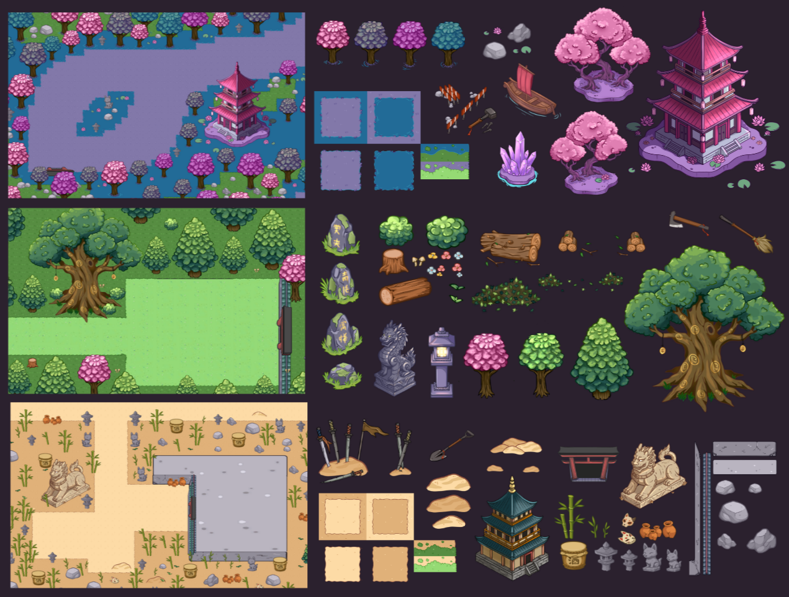

KATANA NO NEKO
Overview
Resource management and restoration with a combat component and three different biomes to explore. Gather resources, face enemies, and defeat bosses that block progress.
My Contribution
I was responsible for the entire art pipeline, from concept art and visual design to producing all in-game assets and sprite animations.

I designed and produced key environmental assets, including the village buildings and props, to create a welcoming yet functional starting area for the player.

I created all sprite animations for the main character and NPCs, focusing on fluid movement and game feel.

I also produced various biome-specific assets and environmental props, ensuring each of the three biomes had a distinct visual identity and atmosphere.

Special combat animations and effect-driven sprites were developed to provide responsive feedback during boss battles and intense enemy encounters.

The project included Cinematic work and promotional videos, as well as visual identity through art and covers, ensuring a cohesive look across all platforms.